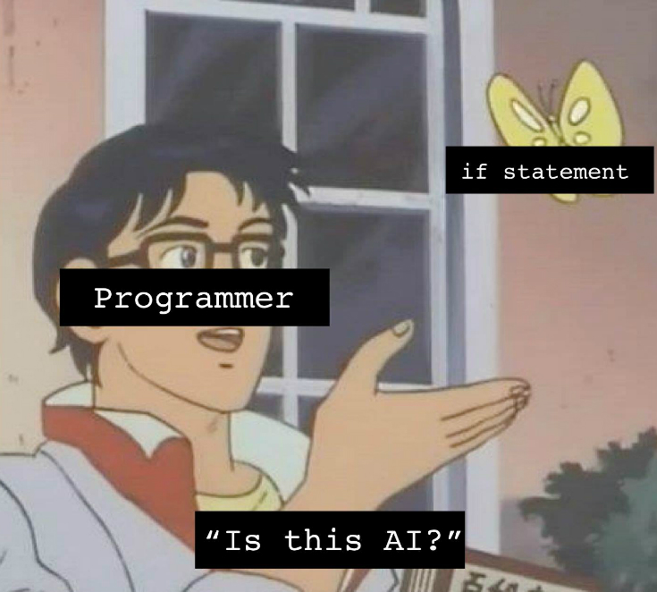

Lab 3
- 3.1
- Node is what you type in the terminal to run the javascript. Express is how you create the package.json file neccessary to run your server.
- The json file contains the modules needed to run the server.
- 3.2
- The file locations are static and they files themselves can be changed without needing to re-write the javascript.
- We never removed the code allowing it to display the "Hello World" functionality, we just gave it something more to do.
